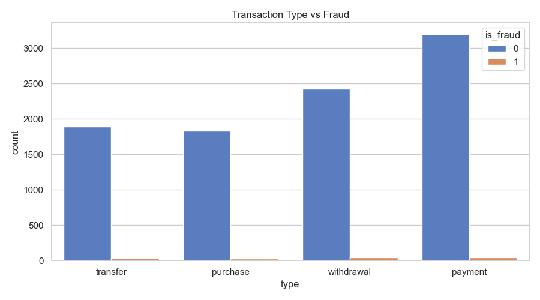
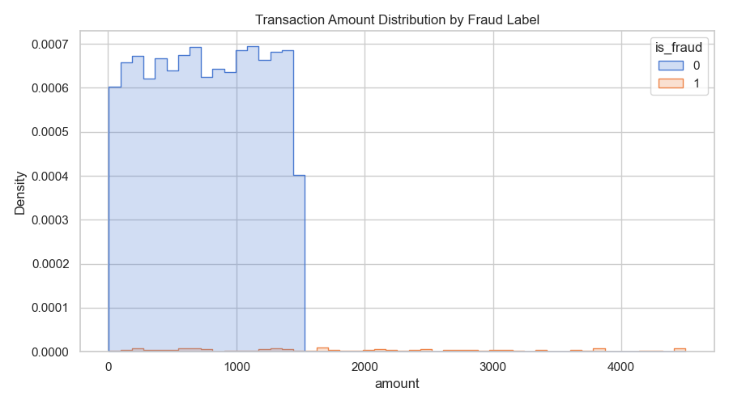

AI-Powered Risk Monitoring
Detect suspicious activity before it becomes a loss.
This project combines synthetic banking data, fraud signals, and analytical storytelling into a polished, presentation-ready fraud detection experience.
9,500 Transactions
800 Customers
8% Risk Signal
Risk Snapshot
92%
Pattern Coverage
4.2x
Higher Risk
24/7
Monitoring Ready
Project Overview
This dashboard-style experience simulates realistic banking behavior, highlights suspicious transaction patterns, and packages the results into a clean, business-friendly story.
Dataset9,500 synthetic transactions
FocusFraud detection and risk segmentation
OutputCharts, SQL, and analytics notes
Workflow
01
Generate
Create synthetic bank transactions with realistic fraud scenarios and customer behavior.
02
Clean
Engineer fraud features, normalize transaction states, and build analytics tables.
03
Analyze
Surface fraud patterns, high-risk transactions, and executive-ready findings.
Fraud Insights
Visual outputs from the analysis workflow.
Type vs Fraud

Amount Distribution

Fraud analysis is ready for review with statistical summaries and transaction-level signals.